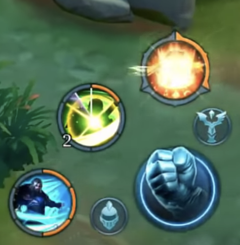

Skill
In the game Arena of valor every heroes have different skills and unique fighting styles. 1 heroes have maximum of 4 skills, some are 3 skills. This is also the reaon why Arena of valor became of popular.
Ability Power is the stat that will make your skills (provided you are playing a character that deals magic damage with skills) deal more damage. What this means is that if you don't boost this stats your skills will not deal more damage.
<
Here is the link of some skills:
https://arenaofvalor.gamepedia.com/Skills